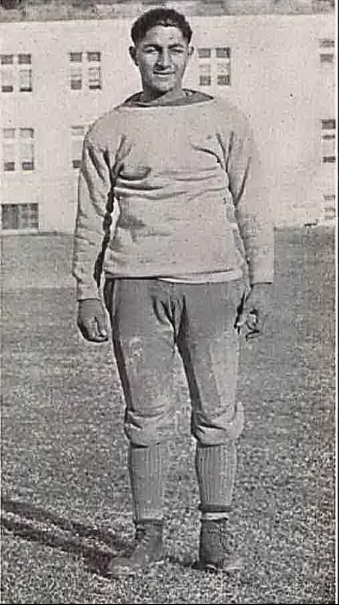

Vic Orsatti
Ernie's brother: USC quarterback, agent to Judy Garland and Sonja Henie, later a producer. Formed Sabre Productions on Sept 17, 1953, planning This Island Earth as its first film (the picture was made at Universal). Producer credits: Flight to Hong Kong (assoc., 1956), Ride Out for Revenge (assoc., 1957), Domino Kid and The Hired Gun (1957), Apache Territory (1958), A Face in the Rain (exec., 1963), plus the CBS western The Texan (1958–60) with Rory Calhoun. Earliest credit: script clerk on Spring Fever (1927).
Born Victor Manuel Orsatti in Los Angeles, Nov 25, 1905; died Newport Beach, June 9, 1984; interred at Pacific View Memorial Park, Corona del Mar.
Mob-adjacent orbit: his first wife June Lang (m. 1937) later married Outfit figure Johnny Roselli; second wife Marie "The Body" McDonald reportedly had an affair with Bugsy Siegel in Las Vegas while divorcing him (1947).
Photos (link only): with RKO starlet Frances Neal at the Citizen Kane premiere, 1941 (Variety); at Victor Orsatti's spaghetti party with Al, Alice Faye and James Stewart (Getty). In July 1934, gossip columns reported Jean Harlow at the Legion prizefights with Vic Orsatti.
Credits in the archive (9)
- 1927 Spring Fever Script Clerk
- 1932 Sky Devils Assistant Director
- 1956 Flight to Hong Kong Associate producer
- 1957 Domino Kid Producer
- 1957 Ride Out for Revenge Associate producer
- 1957 The Hired Gun Producer
- 1958 Apache Territory Producer
- 1958 The Texan TV Producer · 2 episodes
- 1963 Face in the Rain Executive producer
On the timeline
Vic quarterbacks USC
Vic Orsatti played quarterback (No. 5) for Howard Jones's 1925 and 1926 USC Trojans, and also played baseball and ran track at USC.
Vic's spaghetti parties
A period news photo shows Al and Victor Orsatti with Alice Faye, James Stewart, Rochelle Hudson and Shirley Ross at "one of Victor Orsatti's famous Hollywood spaghetti parties." Vic Orsatti was also Alice Faye's agent and her friend.
Frank P. Orsatti & the Wizard of Oz
Agent Frank P. Orsatti told MGM producer Arthur Freed that Samuel Goldwyn held the rights to The Wizard of Oz – the film that made Orsatti client Judy Garland a legend. Vic Orsatti negotiated her Dorothy contract.
An all-star wedding
On May 29, 1937, Vic Orsatti married film actress June Lang in Hollywood. Her bridesmaids were featured film players Shirley Deane, Dixie Dunbar, Claire Trevor and Alice Faye, along with Jean Chatburn, wife of Vic's brother Frank P. Orsatti. Sharon Mulcahy was the flower girl, and an Associated Press photo of the wedding party ran in newspapers that June.
"Husbands are much easier to find than good agents."
Actress Marie "The Body" McDonald (married to Vic Orsatti 1943–47, formerly Bugsy Siegel's girlfriend) kept him as her agent after the divorce.
The Bugsy Siegel connection
A fan-history site claims that during Marie McDonald's 1947 Las Vegas divorce stay from Vic Orsatti she rode the Flamingo Hotel float for Siegel – that detail is from a non-scholarly source. Testimony before the Senate's Kefauver Committee tied agent Frank P. Orsatti to Siegel directly: Irving Sherman, who was in California from 1937 to 1940, said he became friendly with Benjamin "Bugsy" Siegel and went to the track with him, and that Frank Orsatti, of the Orsatti Bros. Theatrical Agency, introduced them.
Saber Productions & Rorvic Productions
Vic Orsatti's Saber Productions produced films incl. Flight to Hong Kong (1956); Rorvic Productions (with Rory Calhoun) made CBS's The Texan.
Sources: commons.wikimedia.org · catalog.afi.com · en.wikipedia.org · findagrave.com · glamourgirlsofthesilverscreen.com · Weaver, Schecter & Kiss, Universal Terrors 1951–1955 (McFarland, 2017) · Worcester Democrat and Ledger-Enterprise (Pocomoke City, MD), July 13, 1934, via MyHeritage newspaper index: https://www.myheritage.com/names/jean_harlow